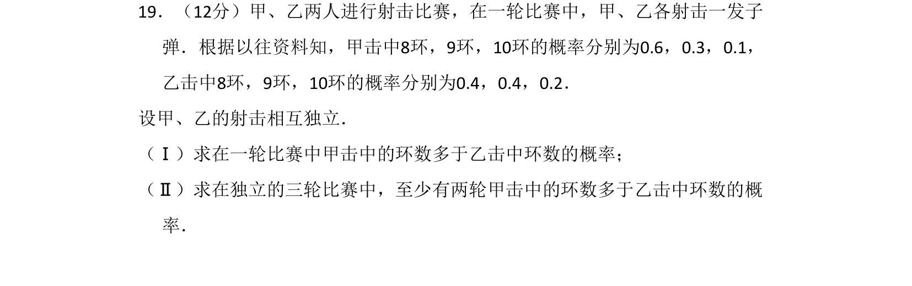
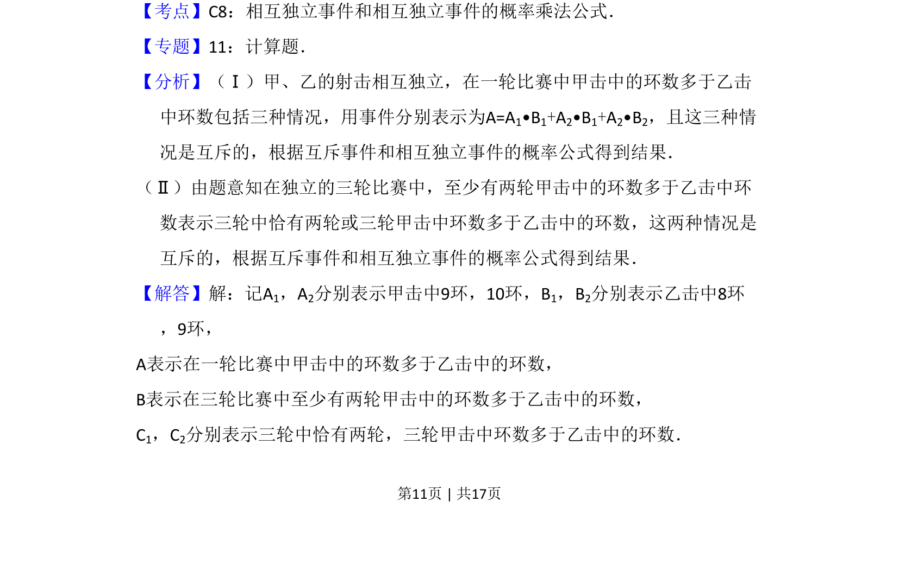
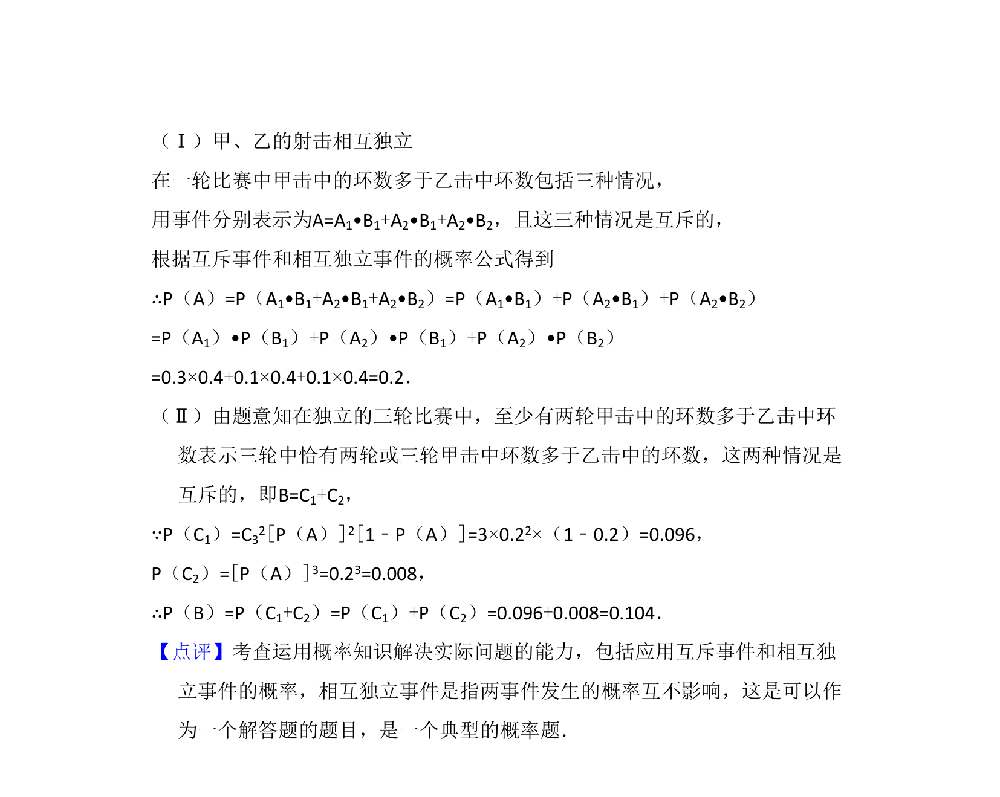

考点：概率 相互独立事件 排列组合

甲乙各射一发独立，给出各环概率，求一轮甲环数多于乙的概率，及三轮中至少两轮甲领先的概率。


📄 原 PDF 第 11 页：
素材/真题/吉林/2008-2024·（吉林）数学高考真题/2008年高考数学试卷（文）（全国卷Ⅱ）（解析卷）.pdf
19．（12分）甲、乙两人进行射击比赛，在一轮比赛中，甲、乙各射击一发子 弹．根据以往资料知，甲击中8环，9环，10环的概率分别为0.6，0.3，0.1， 乙击中8环，9环，10环的概率分别为0.4，0.4，0.2． 设甲、乙的射击相互独立． （Ⅰ）求在一轮比赛中甲击中的环数多于乙击中环数的概率； （Ⅱ）求在独立的三轮比赛中，至少有两轮甲击中的环数多于乙击中环数的概 率．
【考点】C8：相互独立事件和相互独立事件的概率乘法公式．菁优网版权所有 【专题】11：计算题． 【分析】（Ⅰ）甲、乙的射击相互独立，在一轮比赛中甲击中的环数多于乙击 中环数包括三种情况，用事件分别表示为A=A1•B1+A2•B1+A2•B2，且这三种情 况是互斥的，根据互斥事件和相互独立事件的概率公式得到结果． （Ⅱ）由题意知在独立的三轮比赛中，至少有两轮甲击中的环数多于乙击中环 数表示三轮中恰有两轮或三轮甲击中环数多于乙击中的环数，这两种情况是 互斥的，根据互斥事件和相互独立事件的概率公式得到结果． 【解答】解：记A1，A2分别表示甲击中9环，10环，B1，B2分别表示乙击中8环 ，9环， A表示在一轮比赛中甲击中的环数多于乙击中的环数， B表示在三轮比赛中至少有两轮甲击中的环数多于乙击中的环数， C1，C2分别表示三轮中恰有两轮，三轮甲击中环数多于乙击中的环数．